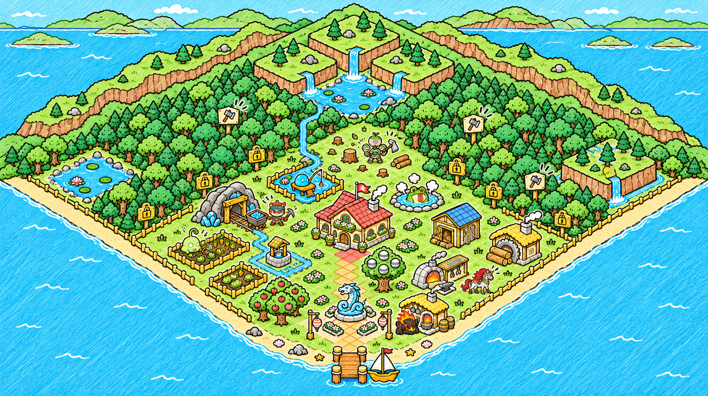
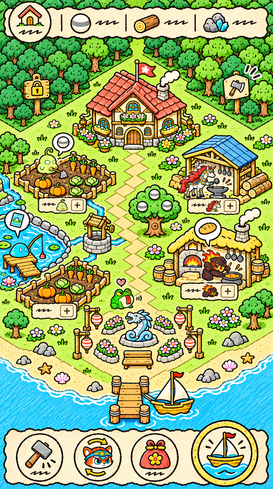
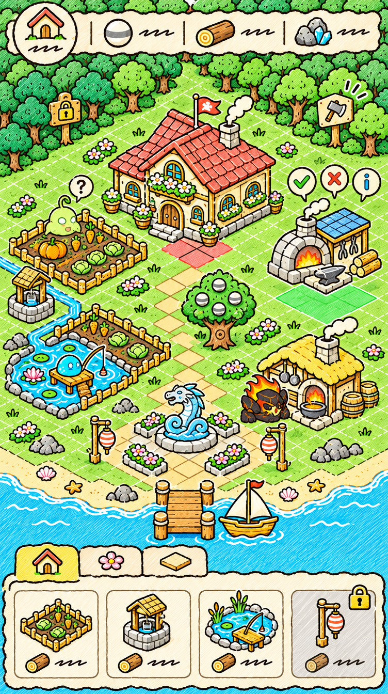

Concept Nhà, lần 2: isometric 2:1 như Clash of Critters, đảo 48 × 48 ô
Lưới thoi rộng gấp đôi cao, mọi công trình có góc chân thoi chĩa xuống phía người xem, thấy mái và hai mặt tường. Đảo là một khối thoi lớn chia 6 × 6 ô rừng (8 × 8 ô lưới mỗi ô).

F. Toàn đảo thu nhỏ hết cỡ: làng ở nửa dưới, rừng dày phủ phần còn lại, cao nguyên có thác và hồ ở góc trên, bãi cát dọc hai cạnh dưới, bến ở mũi nam.

D. Một màn ở mức thu phóng thường (nhà chính rộng khoảng nửa màn), kèm UI.

E. Chế độ xây: lưới thoi hiện, lò rèn được nhấc lên có chân xanh, ô đỏ cạnh nhà chính, khay thẻ công trình.
Lần 1 (góc nhìn bản đồ, đã bỏ) và lần thử isometric hỏng